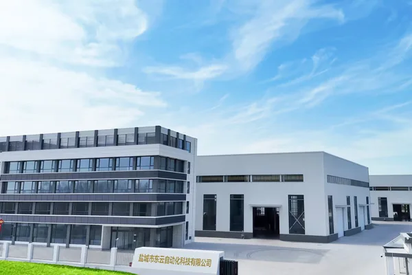
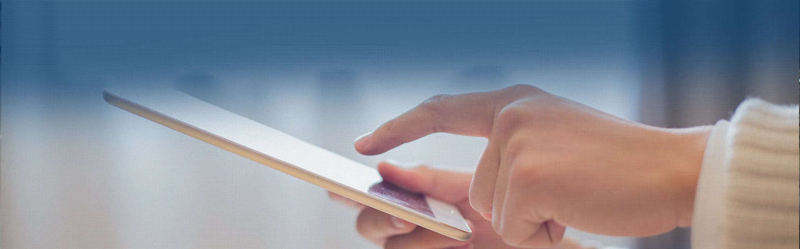

Về DOWIN Machinery
Đối tác tin cậy cung cấp giải pháp máy ép khuôn cát tươi và dây chuyền đúc tự động hàng đầu.
Kinh nghiệm bán hàng & Kỹ thuật phong phú
Với đội ngũ kỹ thuật cao cấp đáng tự hào, DOWIN Machinery đã tích lũy được hàng chục năm kinh nghiệm trong ngành công nghiệp đúc. Khởi đầu bằng công nghệ, chúng tôi liên tục cải tiến và tiến bộ để hội nhập chặt chẽ với các tiêu chuẩn quốc tế.
Ngay từ đầu quá trình gia công từng bộ phận đều được kiểm soát nghiêm ngặt, mang lại hiệu quả hoạt động ổn định vượt trội cho thiết bị đúc DOWIN.
Giải pháp tích hợp & Thiết kế riêng
Từ kinh nghiệm xuất khẩu nhiều năm, chúng tôi hiểu rõ nhu cầu và sự khác biệt trong yêu cầu sản xuất của từng khách hàng. Sự tinh vi của công nghệ DOWIN cho phép chúng tôi cung cấp các tùy chỉnh đa dạng — từ các dây chuyền sản xuất hàng loạt cơ bản đến các giải pháp tự động hóa chuyên biệt mang lại giá trị cao.
Chúng tôi không chỉ cung cấp máy móc, mà còn hỗ trợ lập kế hoạch dây chuyền sản xuất toàn bộ nhà máy. Bằng cách tích hợp dọc từ thượng nguồn đến hạ nguồn, chúng tôi giúp hệ thống hóa quy trình, tối ưu hóa sản xuất, tiết kiệm chi phí và rút ngắn chu kỳ đầu tư cho bạn.
Lắp đặt, bảo trì và bảo dưỡng chuyên nghiệp
Đường dây phục vụ 24/7: Để đảm bảo dây chuyền sản xuất của bạn luôn hoạt động trơn tru, mọi thắc mắc kỹ thuật đều được xử lý và giải đáp nhanh chóng. Kho phụ tùng chính hãng của DOWIN luôn có sẵn để cung cấp thay thế kịp thời với mức giá hợp lý.
Tour bảo dưỡng định kỳ: Các chuyên gia của chúng tôi thường xuyên thực hiện các chuyến bảo trì tại nhà máy khách hàng để duy trì thiết bị ở trạng thái hoàn hảo nhất. Mọi dòng máy mới đều đi kèm chính sách bảo hành 1 năm với chi phí linh kiện & sửa chữa được miễn phí (trong điều kiện vận hành tiêu chuẩn).
Sứ Mệnh Của Chúng Tôi
Đồng hành cùng sự phát triển lớn mạnh của ngành công nghiệp đúc tại Việt Nam và trên thế giới. DOWIN cam kết mang đến những hệ thống máy móc bền bỉ, vận hành thông minh — hướng tới một quy trình đúc hội tụ Nhanh chóng, Chính xác và Tiết kiệm năng lượng.

